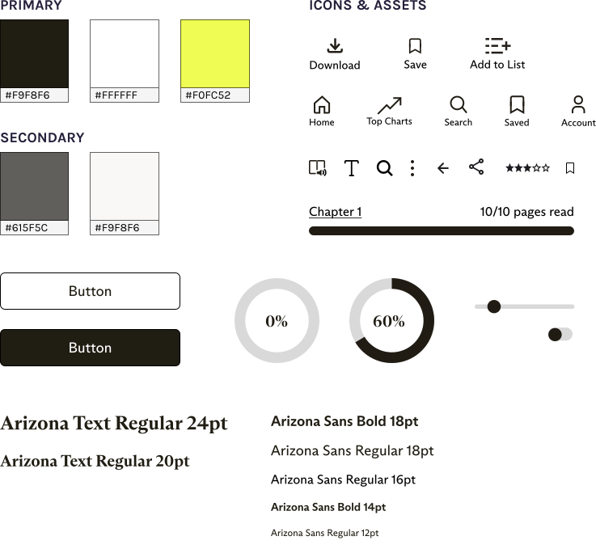
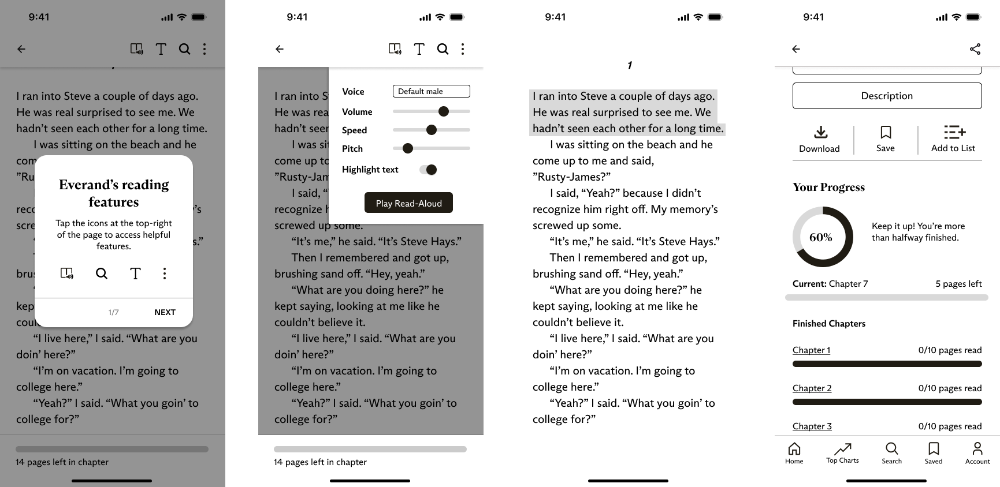

ACCESSIBILITY, USER RESEARCH, UX/UI
Everand redesign for ADHD users
Designing features that improve the experience of using an eBook app, making it more accessible to users with ADHD.
TEAM
Myself
ROLE
UX/UI Designer, Researcher
TIME
Sept-Dec 2023
TOOLS
Figma
Background
Everand is a digital library app that provides eBooks, audiobooks, and more. At the time of this project, Everand lacked accessibility features, potentially alienating users from productivity. Within this case study, I look at Attention Deficit Hyperactivity Disorder (ADHD) specifically.
Why did I choose to focus on ADHD?
Microsoft's Inclusive Design methodology believes in the notion of "Solve for One, extend to many." Invisible disabilities are especially often overlooked when it comes to designing for accessibility. By designing for ADHD which affects 2.6% of adults worldwide, I hope to open up accessibility to a wide range of users.
PROBLEM STATEMENT
“How might we make the Everand reading experience more accessible to people with poor attention, improving productivity?"
ADDED FEATURES
Final Prototype
Tutorial
Users are informed of all helpful reading features.
Read-Aloud
The audio-visual pairing improves sustained attention.
Completion Highlighting
Keeps user engaged though increased interaction with the app.
Progress Tracking
Improves motivation and encourages the user to continue their task as they feel rewarded.
PROCESS
The Journey
The project was broken down into phases following the Double Diamond (colour-coded for convenience!):
Discover
- Constraint Mapping
- User Research
- Secondary Research
Define
- Research Triangulation
- Personas
- Proposed Solution
Develop
- Wireframing
- UI Style Guide
- User Testing
Deliver
- Final Design
- Reflection
DISCOVER
Constraint Mapping
I began the Discover stage by doing a Constraint Mapping activity where I brainstormed permanent, situational, and temporary constraints that users of the app with ADHD may have. These were also adopted from Microsoft's Inclusive Design principles and would later help with persona development.
DISCOVER
Research
Research consisted of User Research (semi-structured interview and observation) and a Literature Review.
User Research
The interview and observation took place virtually with a webcam facing the user so I could see their facial expressions and behaviour as they used Everand. Interview questions were asked before and after the observation for which the user was tasked to read a book of their choice for 10 minutes.
INTERVIEW SUMMARY

ADHD Experience
User struggles with extended tasks and non-immediate rewards.

Managing ADHD
User manages ADHD using planners, checklists, routines, and time pressures.

Everand Impressions
Easy navigation due to experience with similar apps. Mentions lack of tutorial. Some difficulty with reading task—prefers physical books due to less distractions.

Desired Features
Rewards for reading progress, highlighting parts of the page that have already been read which acts as a checklist to increase feelings of accomplishment.
Secondary Research
Scholarly articles related to ADHD, reading, and acessibility were read. Literature reviews of these articles were made and my key findings are as follows:
- Individuals with attention deficit have poor reading comprehension when reading digitally which is correlated to their decreased sustained attention (Ben-Yehudah and Brann; Stern et al.).
- Text-to-speech may assist people with ADHD understand what they are reading more clearly and have less problems with reading in general (Kyriakaki and Driga 207).
- Reading aids such as reading guides and highlights help people with ADHD concentrate on one line of text at a time, minimizing visual distractions and improving reading comprehension and tracking (Kyriakaki and Driga 207).
- Apps that use strategies including gamification, interactive activities, and audiovisual stimulation provide an organized and encouraging environment for people with ADHD to develop they attention skills by including elements like progress tracking and incentives (Kyriakaki and Driga 208).
DEFINE
Personas
Using data from all research sources about ADHD, I developed three personas to capture each type of contstraint (permanent, temporary, and situational) centered around attention deficit. Select the cards below to show/hide more details.
Permanent

Sean Nicols, 22
Full-time gas station attendant, has ADHD

Situational

Fiona Hlavach, 26
Full-time bank teller, experiencing grief

Temporary
Bradley El-Sawy, 20
3rd year Civil Engineering student, sleep deprived
DEFINE
Proposed Solution
Analyzing research and creating personas allowed me to develop a possible solution to solve the users’ mismatched interaction.
A venn diagram including all of the possible solutions gathered from each source of research was created. Here, I can hone in on which features are more necessary. Although the tutorial was only mentioned on one side, I felt that it should be considered since it increases user-friendliness. According to an NNGroup article, icons weren't sufficient in letting users know what features were available and therefore a tutorial may be a good idea to implement.
DEVELOP
UI Style Guide
I analyzed the branding and style of the Everand app in order to adapt my features. Below is a summarized style guide.
DEVELOP
Wireframes
Wireframes were created utilizing the style guide. Low-fidelity wireframes were made first and then later shown to the same participant for feedback. High-fidelity wireframes were optimized based on feedback. In the end, a total of 36 screens were created in order to get the final prototype working.
Low-fidelity
High-fidelity
DEVELOP
User Testing
The same interviewee during the Discover phase was contacted again for feedback. A Qualitative Preference Test of the wireframes and a remote Wizard of Oz of a mid-fidelity prototype was conducted.
OUTCOMES OF TESTING
- Changed copy and UI elements based on both tests
- Different positioning of elements based on Preference Testing
- Modification of new functionality (e.g., adding pitch as an option for the Read-Aloud feature)
DELIVER
Final Design
The culmination of research and user testing! The final Everand redesign includes four new features intended to improve productivity of ADHD users but applies to everyone:
Tutorials, Read-Aloud, Completion Highlighting, and Progress Tracking.
A video demo is available below.
DELIVER
Reflection: Designing with, not just for users
Invisible disabilities shouldn't be considered less important just because we can't see them. This project reinforced the importance of preliminary research and working with users to reach a solution. As designers, we must consider all possible usability challenges our users face. I was fortunately able to gain a better understanding of users with ADHD by working closely with one which gave me insights that I would have never considered on my own. Each user's experiences are unique and each interaction gives us a new perspective to consider when designing.